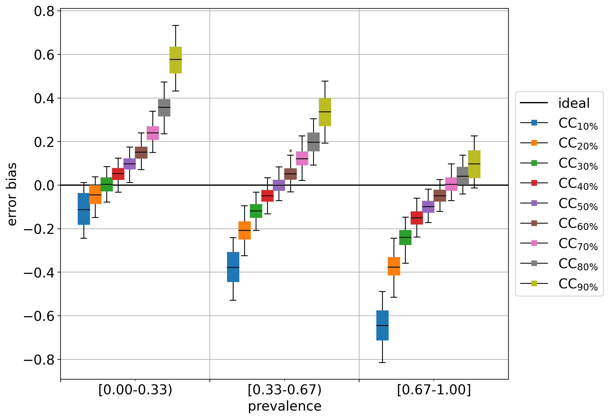
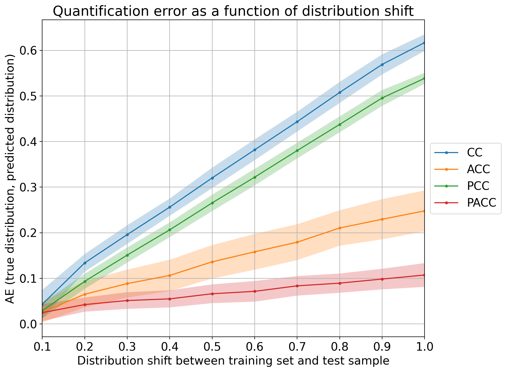

6. Plotting
The module qp.plot implements some basic plotting functions that can help analyse the performance of a quantification method.
All plotting functions receive as inputs the outcomes of some experiments and include, for each experiment, the following three main arguments:
method_names a list containing the names of the quantification methods
true_prevs a list containing matrices of true prevalences
estim_prevs a list containing matrices of estimated prevalences (should be of the same shape as the corresponding matrix in true_prevs)
Note that a method (as indicated by a name in method_names) can appear more than once. This could occur when various datasets are involved in the experiments. In this case, all experiments for the method will be merged and the plot will represent the method’s performance across various datasets.
This is a very simple example of a valid input for the plotting functions:
method_names = ['classify & count', 'EMQ', 'classify & count']
true_prevs = [
np.array([[0.5, 0.5], [0.25, 0.75]]),
np.array([[0.0, 1.0], [0.25, 0.75], [0.0, 0.1]]),
np.array([[0.0, 1.0], [0.25, 0.75], [0.0, 0.1]]),
]
estim_prevs = [
np.array([[0.45, 0.55], [0.6, 0.4]]),
np.array([[0.0, 1.0], [0.5, 0.5], [0.2, 0.8]]),
np.array([[0.1, 0.9], [0.3, 0.7], [0.0, 0.1]]),
]
in which the classify & count has been tested in two datasets and the EMQ method has been tested only in one dataset. For the first experiment, only two (binary) quantifications have been tested, while for the second and third experiments three instances have been tested.
In general, we would like to test the performance of the quantification methods across different scenarios showcasing the accuracy of the quantifier in predicting class prevalences for a wide range of prior distributions. This can easily be achieved by means of the artificial sampling protocol that is implemented in QuaPy.
The following code shows how to perform one simple experiment in which the 4 CC-variants, all equipped with a linear SVM, are applied to one binary dataset of reviews about Kindle devices and tested across the entire spectrum of class priors (taking 21 splits of the interval [0,1], i.e., using prevalence steps of 0.05, and generating 100 random samples at each prevalence).
import quapy as qp
from protocol import APP
from quapy.method.aggregative import CC, ACC, PCC, PACC
from sklearn.svm import LinearSVC
qp.environ['SAMPLE_SIZE'] = 500
def gen_data():
def base_classifier():
return LinearSVC(class_weight='balanced')
def models():
yield 'CC', CC(base_classifier())
yield 'ACC', ACC(base_classifier())
yield 'PCC', PCC(base_classifier())
yield 'PACC', PACC(base_classifier())
train, test = qp.datasets.fetch_reviews('kindle', tfidf=True, min_df=5).train_test
method_names, true_prevs, estim_prevs, tr_prevs = [], [], [], []
for method_name, model in models():
model.fit(train)
true_prev, estim_prev = qp.evaluation.prediction(model, APP(test, repeats=100, random_state=0))
method_names.append(method_name)
true_prevs.append(true_prev)
estim_prevs.append(estim_prev)
tr_prevs.append(train.prevalence())
return method_names, true_prevs, estim_prevs, tr_prevs
method_names, true_prevs, estim_prevs, tr_prevs = gen_data()
the plots that can be generated are explained below.
6.1. Diagonal Plot
The diagonal plot shows a very insightful view of the quantifier’s performance. It plots the predicted class prevalence (in the y-axis) against the true class prevalence (in the x-axis). Unfortunately, it is limited to binary quantification, although one can simply generate as many diagonal plots as classes there are by indicating which class should be considered the target of the plot.
The following call will produce the plot:
qp.plot.binary_diagonal(method_names, true_prevs, estim_prevs, train_prev=tr_prevs[0], savepath='./plots/bin_diag.png')
the last argument is optional, and indicates the path where to save the plot (the file extension will determine the format – typical extensions are ‘.png’ or ‘.pdf’). If this path is not provided, then the plot will be shown but not saved. The resulting plot should look like:

Note that in this case, we are also indicating the training prevalence, which is plotted in the diagonal a as cyan dot. The color bands indicate the standard deviations of the predictions, and can be hidden by setting the argument show_std=False (see the complete list of arguments in the documentation).
Finally, note how most quantifiers, and specially the “unadjusted” variants CC and PCC, are strongly biased towards the prevalence seen during training.
6.2. Quantification bias
This plot aims at evincing the bias that any quantifier displays with respect to the training prevalences by means of box plots. This plot can be generated by:
qp.plot.binary_bias_global(method_names, true_prevs, estim_prevs, savepath='./plots/bin_bias.png')
and should look like:
The box plots show some interesting facts:
all methods are biased towards the training prevalence but specially so CC and PCC (an unbiased quantifier would have a box centered at 0)
the bias is always positive, indicating that all methods tend to overestimate the positive class prevalence
CC and PCC have high variability while ACC and specially PACC exhibit lower variability.
Again, these plots could be generated for experiments ranging across different datasets, and the plot will merge all data accordingly.
Another illustrative example can be shown that consists of training different CC quantifiers trained at different (artificially sampled) training prevalences. For this example, we generate training samples of 5000 documents containing 10%, 20%, …, 90% of positives from the IMDb dataset, and generate the bias plot again. This example can be run by rewritting the gen_data() function like this:
def gen_data():
train, test = qp.datasets.fetch_reviews('imdb', tfidf=True, min_df=5).train_test
model = CC(LinearSVC())
method_data = []
for training_prevalence in np.linspace(0.1, 0.9, 9):
training_size = 5000
# since the problem is binary, it suffices to specify the negative prevalence, since the positive is constrained
train_sample = train.sampling(training_size, 1-training_prevalence)
model.fit(train_sample)
true_prev, estim_prev = qp.evaluation.prediction(model, APP(test, repeats=100, random_state=0))
method_name = 'CC$_{'+f'{int(100*training_prevalence)}' + '\%}$'
method_data.append((method_name, true_prev, estim_prev, train_sample.prevalence()))
return zip(*method_data)
and the plot should now look like:

which clearly shows a negative bias for CC variants trained on data containing more negatives (i.e., < 50%) and positive biases in cases containing more positives (i.e., >50%). The CC trained at 50% behaves as an unbiased estimator of the positive class prevalence.
The function qp.plot.binary_bias_bins allows the user to generate box plots broken down by bins of true test prevalence. To this aim, an argument nbins is passed which indicates how many isometric subintervals to take. For example the following plot is produced for nbins=3:

Interestingly enough, the seemingly unbiased estimator (CC at 50%) happens to display a positive bias (or a tendency to overestimate) in cases of low prevalence (i.e., when the true prevalence of the positive class is below 33%), and a negative bias (or a tendency to underestimate) in cases of high prevalence (i.e., when the true prevalence is beyond 67%).
Out of curiosity, the diagonal plot for this experiment looks like:

showing pretty clearly the dependency of CC on the prior probabilities of the labeled set it was trained on.
6.3. Error by Drift
Above discussed plots are useful for analyzing and comparing the performance of different quantification methods, but are limited to the binary case. The “error by drift” is a plot that shows the error in predictions as a function of the (prior probability) drift between each test sample and the training set. Interestingly, the error and drift can both be measured in terms of any evaluation measure for quantification (like the ones available in qp.error) and can thus be computed irrespectively of the number of classes.
The following shows how to generate the plot for the 4 CC variants, using 10 bins for the drift and absolute error as the measure of the error (the drift in the x-axis is always computed in terms of absolute error since other errors are harder to interpret):
qp.plot.error_by_drift(method_names, true_prevs, estim_prevs, tr_prevs,
error_name='ae', n_bins=10, savepath='./plots/err_drift.png')

Note that all methods work reasonably well in cases of low prevalence drift (i.e., any CC-variant is a good quantifier whenever the IID assumption is approximately preserved). The higher the drift, the worse those quantifiers tend to perform, although it is clear that PACC yields the lowest error for the most difficult cases.
Remember that any plot can be generated across many datasets, and that this would probably result in a more solid comparison. In those cases, however, it is likely that the variances of each method get higher, to the detriment of the visualization. We recommend to set show_std=False in those cases in order to hide the color bands.